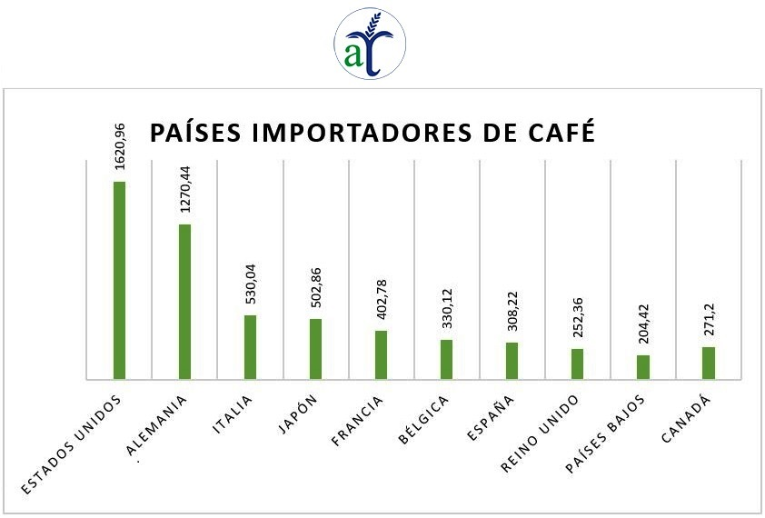

¿CUÁLES SON LOS 3 TIPOS DE GRANOS DE CAFÉ MÁS CULTIVADOS?
Se conocen alrededor de unos 12 tipos de granos de café, de los cuales el Café Arábica y el café Robusta son los más cultivados.
El café Arábica es de Etiopía y existen muchas variedades y mutaciones de este tipo de café. Se caracteriza por ser rico en sabores y aromas. Contiene notas frutales y aroma floral, de acidez baja y equilibrada también, tiene menos cafeína que otros granos.
El grano de café Arábica es el mas buscado en todo el mundo por su sabor equilibrado.
Las variedades son:

Tipos de café:
Café Keyna
Café de java
Café Moka
Grano de café Mondheling
Grano de café Peaberry
Grano Tarrazú
Entre otras tantas variedades.
Granos de café Robusta, es un café con un sabor fuerte, astringente y amargo. Tiene mucho cuerpo y cafeína.
Su sabor pasa por el sabor a madera y frutos secos. La planta de este tipo de café es resistente a enfermedades.
Como curiosidades podemos mencionar la genética de estos dos tipos de granos de café
el café Robusta posee 22 cromosomas y el café Arábica posee 44 cromosomas.